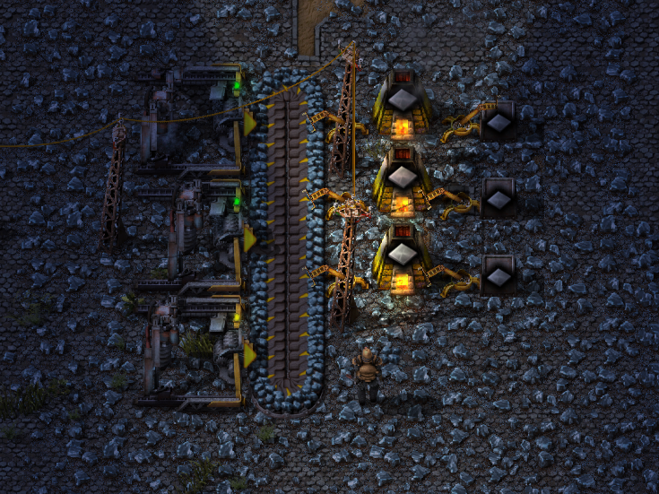
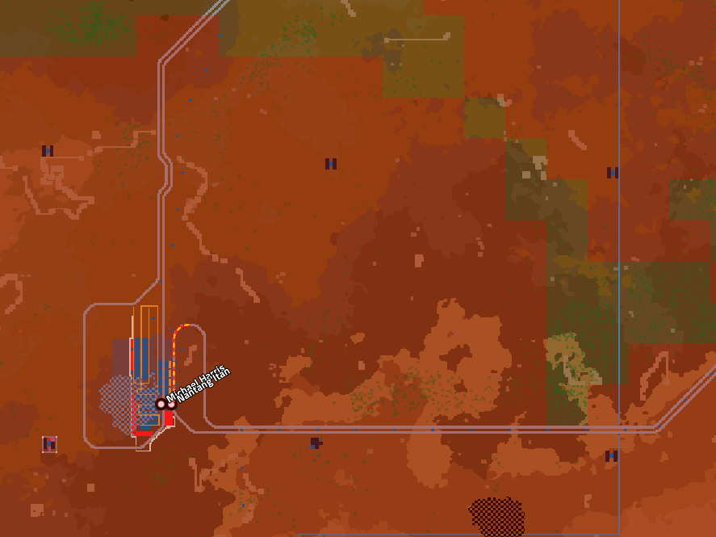
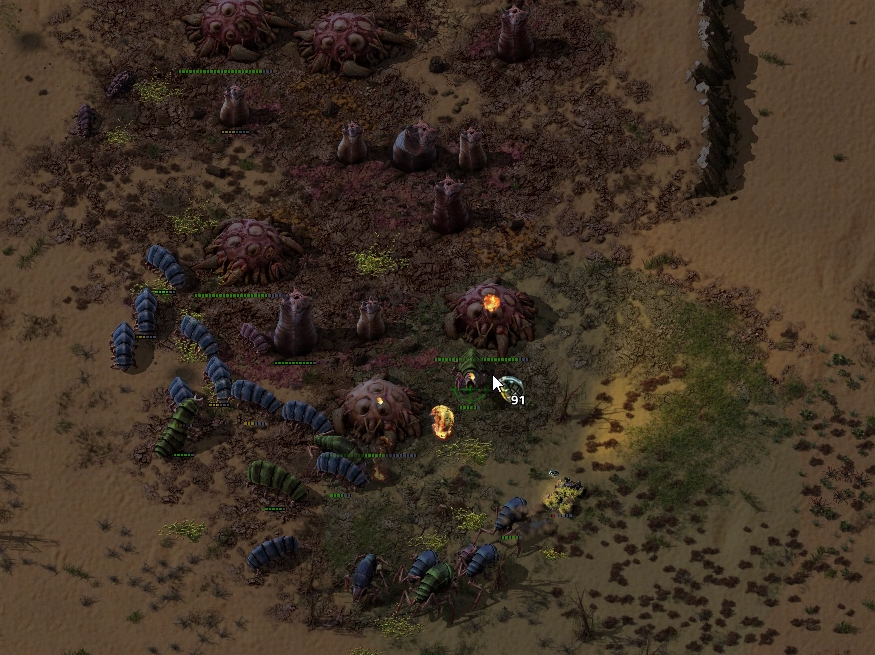

2 Эпоха (Медь и Электричество)
Часть 1 (производство)
Чтобы получить электричество делаем первую паровую электростанцию, которая состоит из: водяного насоса, котла и парового двигателя. В разделе “Схемы” вы сможете найти пример готовой удобной электростанции.
Пришло время повышать производительность, переходим на более быстрые электрические буры и манипуляторы, но не будем забывать, что наше оборудование все равно зависимо от угля и его сгорания, из-за этого облако загрязнения может расти и коснуться ближайших ульев.
Запускаем небольшое производство красных пакетов и начинаем изучать!

Часть 2 (Оборона)
Рекомендуем на данном этапе окружить базу радарами. Так вы сможете отслеживать эволюцию кусак и соответствующе готовиться к дальнейшим зачисткам. Также не помешают бетонные стены, заранее изучите их с помощью красных пакетов, пару слоёв стен конечно сожрут ресурсы, зато вас не сожрут кусаки :)

чёрные точки – это радары
Часть 3 (Атака)
Во 2 эпохе нужно и дальше отпихивать противника как можно дальше. Примерно в это время появится новый вид кусак – плеваки, которые будут мешать зачищать гнезда турелями. В таком случае нужно будет создать автомобиль и сделать 100 – 200 гранат и ехать к гнезду, система точно такая же как в прошлый раз, только машина позволит нивелировать атаки плевак, также помимо гранат, которые наносят урон по площади и будут весьма эффективными, будет возможность стрелять из оружия на самой машине. Проблем с отталкиванием не будет.
